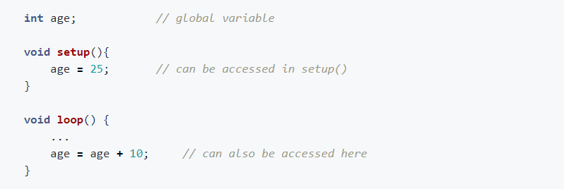

Programming
Introduction
A programming language is used to convey the Progammer’s thoughts into instructions for the microprocessor to understand. To translate english-like instructions to machine code, a middile-ground is required, which is done so by computer programming language. They can be understood by humans, and can also easily and accurately convert the language into binary by compiling the code for the microprocessor to understand. Such programming languages include Python and C/C++. It is important that the instructions of the programmer be conveyed accurately into the programming language as the microprocessor ONLY follows the instructions-to-the-letter by the programming language. If your code is wrong/has errors, the microprocessor reproduces these errors. There are 3 main types of errors:
- Syntax Errors
- not following the rules (syntax) of the programming language
- easily caught by the compiler
- most common of all errors made
- Logical Errors
- Errors made by the programmer in developing the logic of the program. For example:
- incrementing instead of decrementing values
- using imperial units instead of metric
- Hardest to catch, only done by testing the code thoroughly
- Semantic Errors
- improper use of “program statements”. For example:
- using a loop that cannot end
- using an incorrect function or statement
- Not easily identified, rare.
Structured Programming
Structured programming can reduce the occurance of logical errors in any programming language. It is a technique that specifies the way/method of writing code, which is easy to understand and follow and produces good results. It allows us to control the flow of execution and documents our code, making it easier for us to check and understand. It is made up of THREE main structures
- Sequence
- Do one task at a time, one after another
- A task can be made up of many tasks, instructions or structures
- Do it in the correct order and your execution flow will be correct
- Selection
- Allows you to choose one of two options based on a test or question
- If a condition is met, then do Task A else/otherwise do Task B
- Repetition
- Allow repetition of a task, instruction(s) or strucfure based on a condition. It can be repeated none, once or many times.
- Also known as conditional looping.
{kind=link}
Arduino
The Arduino IDE (Integrated Development Environment) is a cross-platform application (runs on Windows, MacOS and Linux) which allows you to enter the source code for your application programming. The IDE includes
- a code editor featuring syntax highlighting and bracket matching
- one-click compliation and uploading of programs to the Ardunio boards
- supports C and C++ using special code structuring
Sketch
- A Sketch is a program written with the Arduino IDE
- Sketches are saved on the development systems as text files with the extension .ino
- Each sketch is created in a folder of the same name on the development system
- A minimal Arduino sketch in C/C++ consists of only two functions:
- setup()
- This function is called only once when the sketch starts after power-up or reset.
- This function is used to initialize variables, I/O pin modes and other libraries that are used.
- loop()
- After the setup() function ends, the loop() function is called.
- This function is executed repeatedly until the board is powered off.
- Heres an example of a Blink program
{kind=link}
Notes:
#define LED_PIN 13
- used to “define” or “declare” to the pre-processor that whenever you see the words LED_PIN, replace it by the number 13.
- the pre-processor is a program in the Arduino IDE that runs just before the compiler, instructions to the pre-processor are called “pre-processor” commands.
- not a program statement therefore doesn't require ";"
void setup()
- any words ending with "()" or "(...)" are functions
- they are blocks of code that, after execution, return a value.
- void infront of setup() indicates that the function does not retunr any values
- “{“ “}” are used to group statements. A group of statements is called a block.
// Pin number attached …
- this is a comment, also created using /* … */, which are ignored by the compiler
- helps the code become readable and understandable.
Arduino Programming Language
- closely resembles the C/C++ syntax.
- it is broken up into 3 parts
- functions
- vaiables
- structure
- These words should be considered as “keywords” and not used to define variables, constants, structures or functions in your program
Data Types
- The Arduino language borrows from the data types in C/C++
- A data type determines the amount of memory required to store the bit pattern and how the storage is interpreted
| Data Type | What it Stores | # of bytes |
|---|---|---|
| void | used only in function declarations to indicate that the function does not return any value | |
| boolean | stores true or false | 1 |
| char | stores 1 character e.g. ‘A’ | 1 |
| unsigned char | stores numbers from 0 to 255, no negatives | 1 |
| byte | equivalent to unsigned char | 1 |
| int | whole numbers from -32766 to +32767 (depends on processor) | 2 |
| unsigned int | whole numbers from 0 to +65535 | 2 |
| word | equivalent to unsigned int | 2 |
| long | extended size whole number -2,147,483,648 to 2,147,483,647 | 4 |
| short | equivalent to unsigned int | 2 |
| float | numbers with decimal point, ranging from -3.4028235E+38 to 3.4028235E+38 | 4 |
| double | equivalent to float | 4 |
Notes:
- int is dependent on the microcontroller used e.g. ATMega are 8-bit processors, which use 16-bits to define an int
Constants
- has an identifier as well as a value (which does not change)
- usually written in UPPERCASE
- #definedoes not declare a constant, it is a pre-processor command
{kind=link}
Variables
- indicates/points to a storage address used to store data of a specific data type
- int "name" points to an address location which has 2 bytes and is capable of storing an integer
- exists only in the region in which they are declared, called a scope
- There are 3 types of variable scopes:
- Local variables: they are inside a function or a block and are only used by the statements within the block.
- Global Variables: they are defined outside the functions, usually at the top and is also visible throughout program.
- Example: 
{kind=link}
{kind=link}
Operators
- Operators are symbols that tells the compiler to perform a specific mathematical or logical operation with the operands.
- Commonly used operators are
- Arithmetic
- "=" assignment, "+" add, "-" subtract, "*" multiply, "/" divide
- with the exception of - negation, arithmetic operators require 2 operands
- gives a numerical result
- Comparison
- == equality, != not equal to, > greater than, < less than
- gives a logical result (true or false)
- >Boolean Operators
- "&&" AND, "||" OR, "!" logical NOT
- gives a logical result
- Bitwise Operators
- "&" and, "|" or, "!" not/inverse, "<<" shift left, ">>" shift right
- changes the bit pattern of the operator
Control Statements
- Control statements provide a means of decision making
- A condition is first tested. If the result is true, then the code for Task A is executed, else the code for Task B
- Control statements are provided using the if-then-else statement
- The condition statement must return a boolean result
- if statements can be nested

Loops
- Loops provide a means of performing a task or executing a block of statements repeatedly
- The following loops are provided and should be used according to the roles applied to them for structured programming
- while()
- do...while()
- for()
- the condition of the loop is controlled by a boolean expression
- If the trigger to the expression is not changed within the loop body, you will end up with an endless repeating loop
{kind=link}
{kind=link}
{kind=link}
Functions
- Functions are blocks of code that perform a specific task
- Allows the code to be modular, organizing a task of many small tasks into a larger idea. This technique is called abstraction. It can also be repeated in a program or re-used without writing.
- For example,
- we could take a number of tasks
- add flour, sugar, yeast
- mix well with a little water
- let the dough rest
- bake for 30 minutes,
- Into a single abstraction, for example, bakeBread. Everytime we call the function bakeBread, it will perfrom the tasks.
- we could take a number of tasks
- Functions can take arguments, however, they are usually passed by value i.e. their value does not change after even though they are changed by the instructions of the function.
- Functions must return a result, which is the data type of the function declaration
- Functions are declared outside any other functions, usually below the loop function
{kind=link}

Arduino IO Functions (Digital)
- The Arduino Uno board has 14 pins which can be configured as digital I/O
- digital, giving/receiving logic levesl of HIGH (+5V) or LOW (0V)
- configured as inputs or outputs using software.
- The procedure in using the digital pins are
- use pinMode() to configure the port to be input or output. The port stays in this mode until another pinMode() is applied, reset occurs or powered off.
- use digitalRead() to read the input, or
- use digitalWrite() to output a value